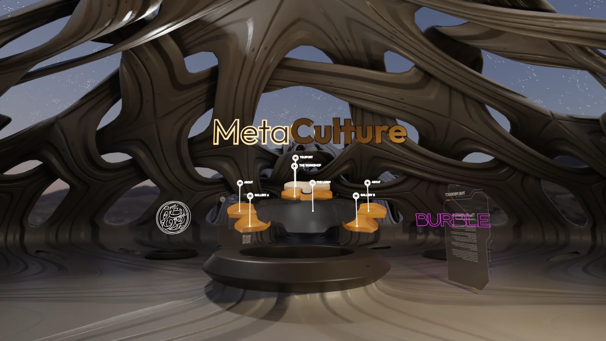
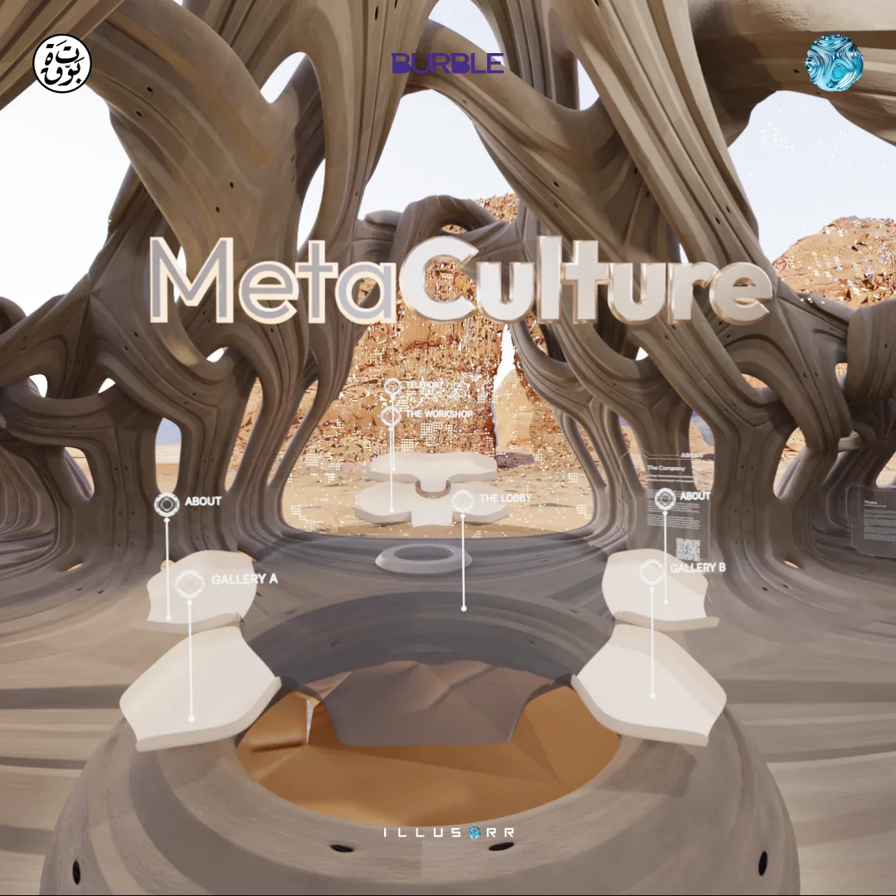
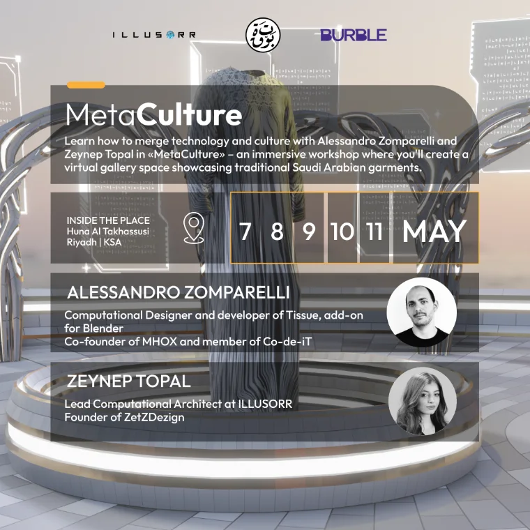
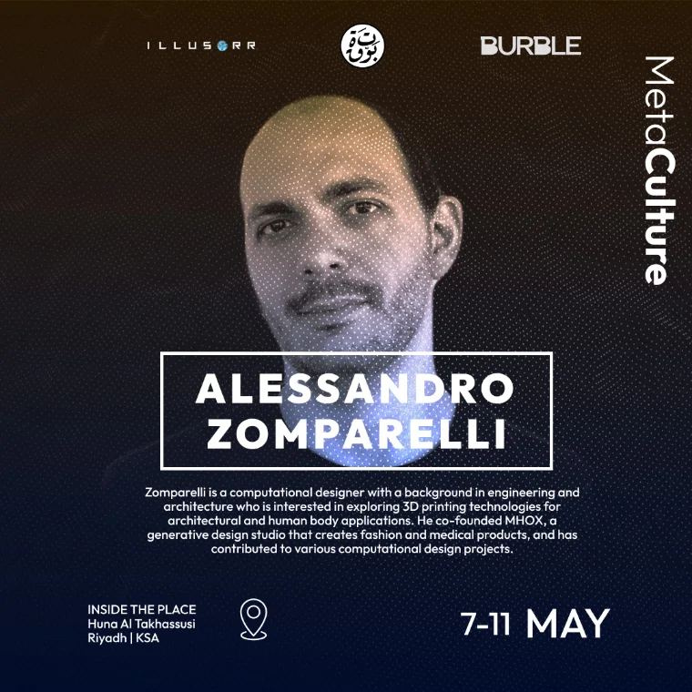

Physical exhibition
Five days inside The Place in Riyadh. Garments, looms and process on the floor, with the people who make them present to explain the work.
7 to 11 May

Traditional garments modelled, simulated and set inside a parametric gallery that opens from anywhere, long after the physical show closes.
Scroll
Metaculture is an immersive initiative built to preserve and showcase cultural heritage through digital and virtual experience.
It merges a physical exhibition, a digital installation and a metaverse environment into one continuous cultural journey, so a visitor moves between realities without ever leaving the story. The work centres on craftsmanship. Textiles, rituals and cultural practices were studied, then rebuilt as living digital objects: weave transferred to surface, drape resolved by simulation, ornament regrown procedurally. Each element was designed not only to hold history, but to reimagine it for a contemporary audience through storytelling and interaction.
The whole exhibition is a single parametric envelope, grown from one surface rule so it streams to a browser or a headset without loss.
A multi layered platform, built so each layer hands the visitor to the next rather than repeating it.
Five days inside The Place in Riyadh. Garments, looms and process on the floor, with the people who make them present to explain the work.
Each piece captured, retopologised and simulated. Traditional pattern is transferred to the digital surface so the weave survives the translation rather than being illustrated.
A walkable gallery holding the finished collection, reachable from a browser. The physical show ends. This one stays open.
The initiative ran as an open workshop. Designers, students and makers built the gallery and its garments together, which is how the method leaves the building with them.


Captured inside the finished environment, at the resolution a visitor actually sees.
“ A blueprint for cultural innovation, bridging the past and the future.Metaculture · Riyadh, 2023